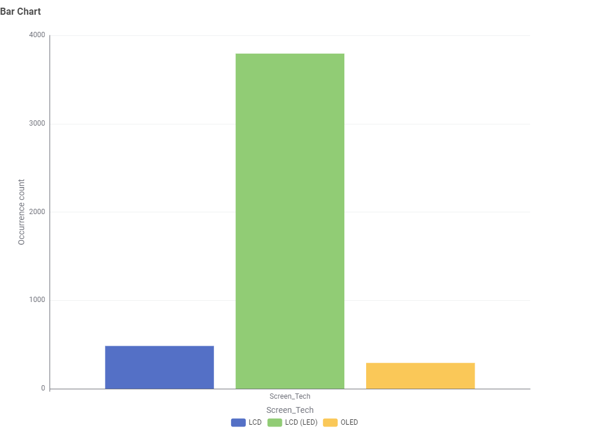
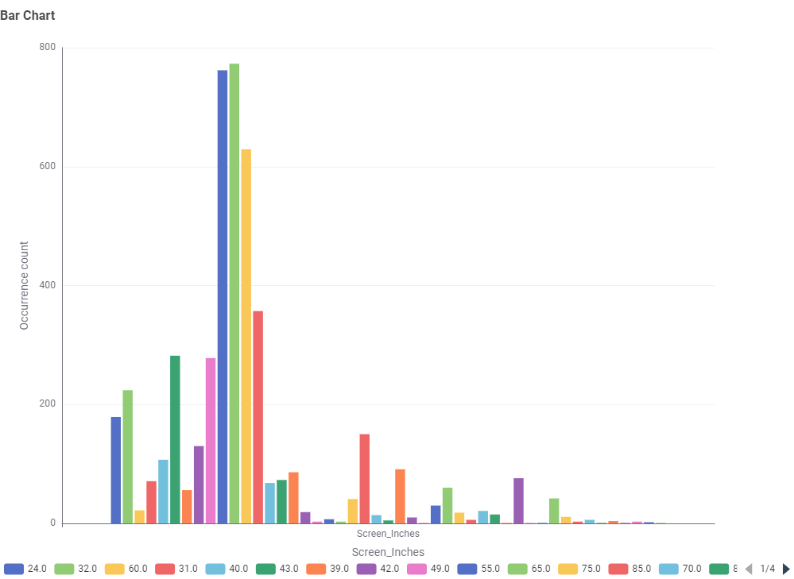
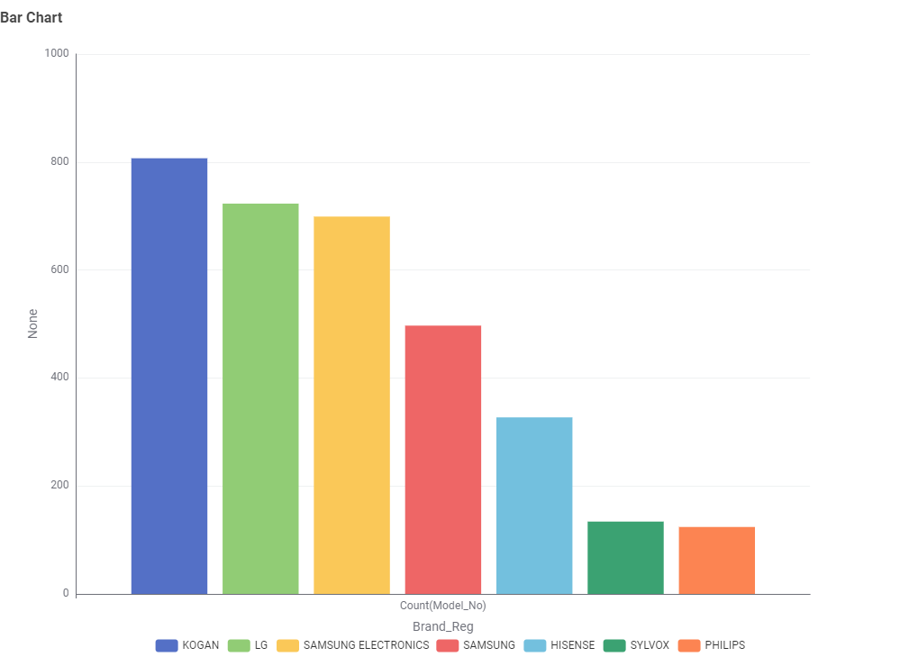
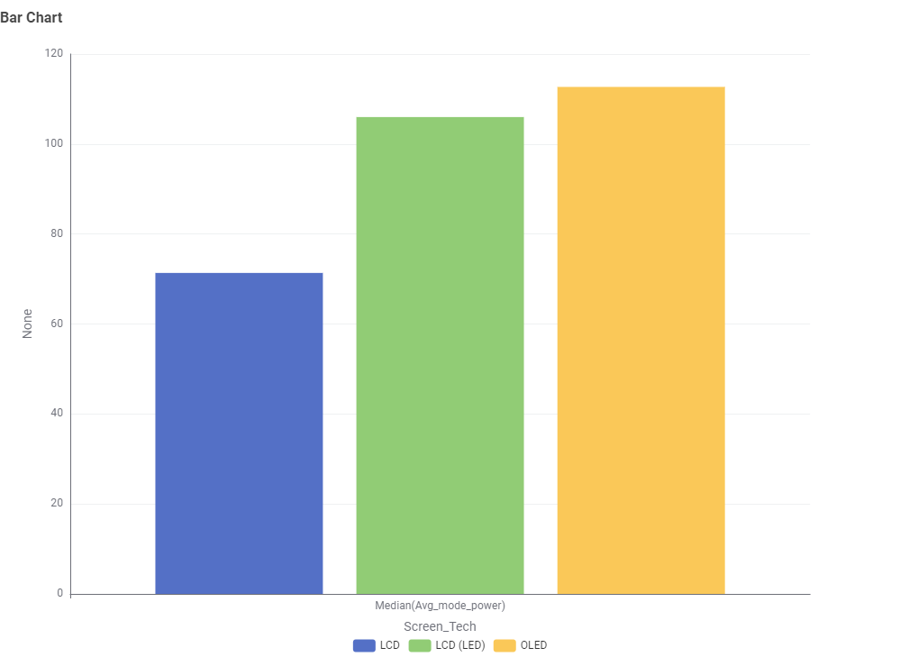
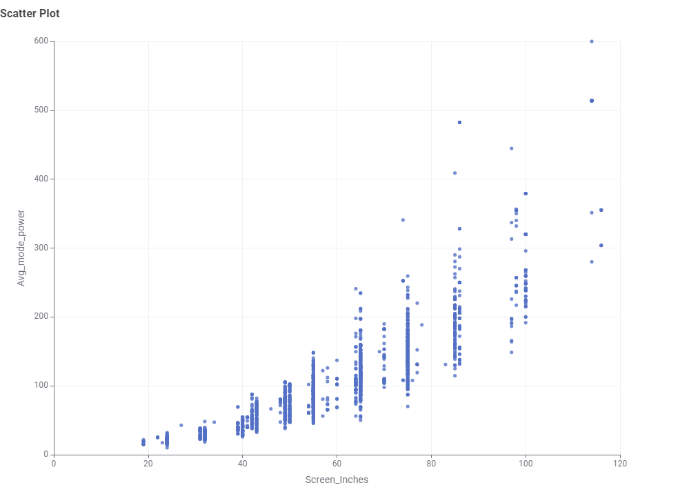
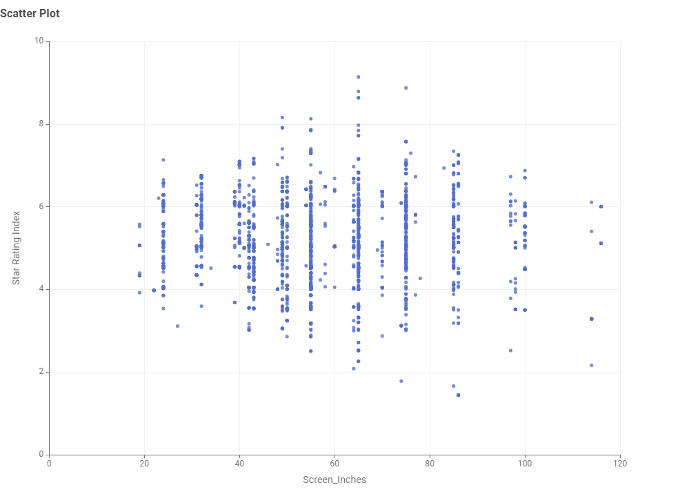

Television Energy Consumption
TVs are in almost every Australian living room, but they don't all use power the same way. Using an Australian Government dataset on TVs currently on the market, this page looks at what actually affects how much power a TV uses, so you can pick one that won't add too much to the electricity bill.
1. What screen technologies are available?

Most TVs sold are LCD (LED); OLED is far less common and typically costs more to run.
2. What screen sizes are most common?

55-inch is the most common size, followed by mid-range sizes around 42–50 inches.
3. Which brands dominate the market?

Popular brands don't always mean the most efficient models — it's worth checking the specs, not just the name.
4. Which screen technology uses the least power?

LCD TVs use the least power on average, while OLED uses slightly more.
5. How does screen size affect power use?

Power use rises clearly as screen size increases — size is one of the biggest factors in running cost.
6. Do larger TVs mean worse star ratings?

Star ratings are fairly spread out across sizes, so a bigger TV isn't automatically less efficient — it still pays to check the rating.
Conclusion: Based on the data, families looking to save on electricity should prioritise screen size and screen technology over brand when choosing a TV.